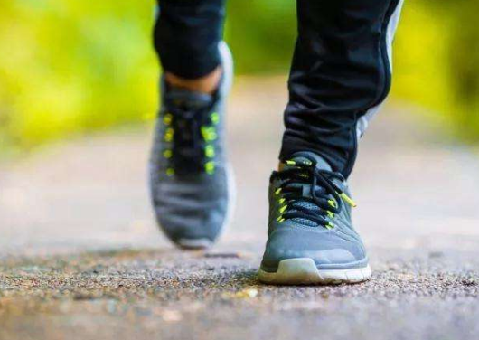
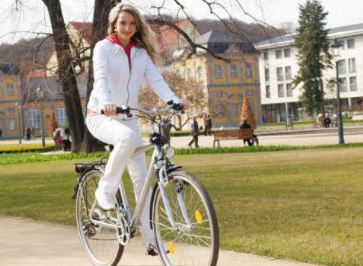
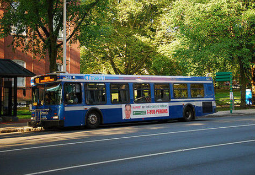
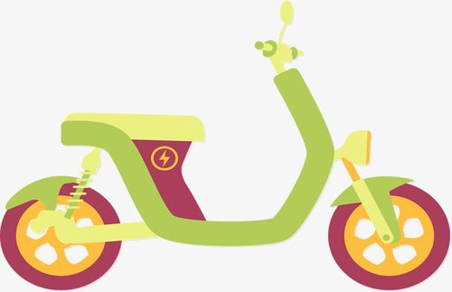
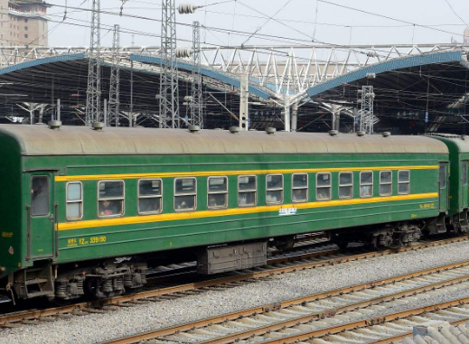

1、 步行：短距离出行选择步行是一种非常环保的出行方式，不仅省油减碳，而且锻炼了身体，可谓是一举两得，是目前最经济环保的出行方式。

2、 自行车：由于自行车是无污染的绿色出行工具，选择自行车，可以身体力行为环保做贡献。有专家计算，如果100万人每周驾车8千米变为骑车8千米，1年即可减少二氧化碳排放约10万吨。现在城市里面到处都是共享单车，所以也是非常方便的。

3、 公共交通：在出行时，尽量选择地铁、公交、公共汽车、地铁等交通工具，用我们的行动染绿城市交通。据数据显示，乘坐公共交通比乘坐小汽车出行，平均每人每年减少4.1公斤氮氢化合物、28.6公斤一氧化碳以及2.3公斤氮氧化物。

4、 电动车出行：一般平时上下班或者出门，我们可以选择电动车，也是非常环保的一种出行方式，不会对环境产生污染。

5、 铁路或长途汽车：长距离旅行，如果时间来得及，尽量不要乘坐飞机，而应选择火车或长途汽车。据统计，与飞机相比，选择火车或长途汽车，能源消耗要降低40%~70%，污染降低85%。短途旅行中，火车、汽车在座位不空的前提下，要比飞机省2~3倍能源，并且路程越长，节省越多，同时二氧化碳排放也相对减少。
